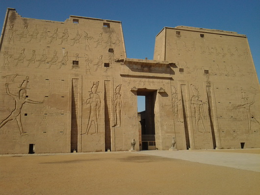
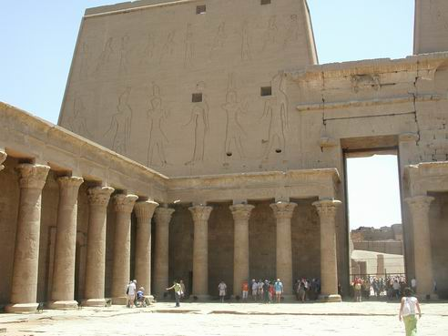
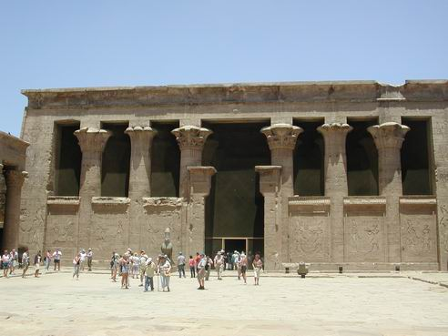

Temple of Horus (AKA Temple of Edfu)
Edfu is located 60Km to the north of Aswan. It was the 2nd Nome of Upper Egypt and the centre of the cult of a triad of Gods, which consisted of Horus of Behdet, Hathor, and their son, Hor-Sama-Tawy. In the old Greek documents, Edfu was known as "Apollopolis Magna" because the Greeks identified Horus with their God Apollo.
Edfu was a flourishing city in Ancient Times. Today, the most important monument in the city of Edfu is the Temple of Horus, which is considered to be one of the most beautiful and preserved Temples in Egypt. The origins of the Temple probably date back to the Second Intermediate Period, but the actual Temple only dates back to Ptolemaic times. The work of construction began during the reign of Ptolemy III (about 237 BC) and was finished during the reign of Ptolemy IV. Some other additions were made by other Ptolemaic Kings, and Roman Emperor Augustus. The construction of this Temple and its additions, inscriptions, and relief's took about 180 years!

Edfu Temple consists of traditional elements of Egyptian Temples of the New Kingdom, together with a few Greek elements, such as the Mamisi, which is situated to the west of the main entrance of the Temple (Mamisi means "house of the divine birth"). It consists of an entrance, a court and chapel. The walls of the mamisi are decorated with scenes showing the story of the divine birth of Horus the child, in the presence of the Goddess Hathor, the God Khenoum and other deities who were concerned with pregnancy and birth.
The Temple has a Pylon that is considered the highest among surviving Temples in Egypt today. It is 37m high and is decorated with battle scenes, representing King Ptolemy VIII smiting his enemies before the God Horus.

Next there is an open courtyard that contains columns with floral capitals on three sides. This open court was open to the public and was known as the court of the offerings, being the place where people could give their offering to the statue of the God.
The Hypostyle Hall is rectangular and 12 columns support its roof. On both sides of the entrance to this hall stands a statue of Horus of Behdet, in the shape of a falcon. This hall is also known as the outer Hypostyle Hall.
An entrance beyond the 1st Hypostyle Hall accesses the Inner Hypostyle Hall. 12 columns to the right support its roof, and on the left there are 2 rooms; one was used as a library that once contained a large number of manuscripts. The other was used as a storeroom or magazine for the utensils and the tools of the Temple.
There are 2 consecutive vestibules; the outer one called the "hall of the offerings", where the walls are decorated with various scenes representing the different deities and offering scenes of the different Ptolemaic Kings. The inner vestibule was called the "rest house of the Gods".
At the end of the Temple is the sanctuary, which includes a niche of grey granite where a statue of the God is supposed to be placed. In front of the dais is a pedestal for the resting of the divine boat. The sanctuary is surrounded, on the outside, by 12 rooms, where many religious scenes were depicted on their walls. Some of these rooms were used as storerooms, while the others were dedicated for different religious purposes.
One of the most remarkable elements of the Temple is the existence of a Nilometer, as well as a chapel, which was dedicated to the Goddess Nut.
On various walls of the Temple, there are many battle scenes, as well as the famous scene of the ritual of the Temple foundation.

The northern wall of the court shows the divine marriage of Hathor and Horus of Behdet, which was celebrated twice every year; once at the Dendera Temple and the second time at the Edfu Temple. The Journey of Hathor, from Dendera to Edfu and the vice versa, can also be seen on this wall.
Another scene, on the inside of the outer corridor of the western side of the Temple, depicts the legend of the conflict between Horus and Seth, the victory of Horus over his uncle, and his coronation to rule the world.